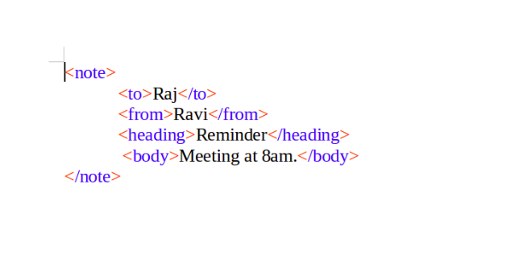

XML is a programming language that is short for eXtensible Markup Language. It was created to store and transport data. It supports information exchange between computer systems.It has no predefined tags therefore one can create their own tags hence, it is self-descriptive.
It was designed to separate information from presentation meaning that it focuses on the information that is on the webpage rather than how it looks. It was designed to be both human and machine readable.
XML can be used for various things which are listed below:
These are just a few uses of XML. it is widely recognized for it's easy storage and data transfer.
An example of XML is below:
The image above shows that XML doesn't have predetermined tags and can easily be stored for future use and transfer.
JavaScript is an object-based, client-side scripting language. This is a language that runs on your browser rather than from a server. This is what actually makes it peculiar. It shouldn't be confused with Java since they are both quite different. They apparently have more differnces than similarities.
It provides interactivity, real-time content updates and also provides animation. It easily provides these functions since it doesn't have to reload the whole page to provide them. It is embedded in a HTML page with a script tag
JavaScript is related to HTML and CSS in the sense that they work hand in hand to make webpages that are structured, appealing and interactive. HTML provides the structure and content for webpages, CSS adds style and visual designs to the webpage while JavaScript builds upon the contents to make them interactive and engaging. These three languages work together to create many of the websites we visit today and are the the three essential components of modern web development.
Some common Elements, Properties, Methods, and Functions of JavaScript include: